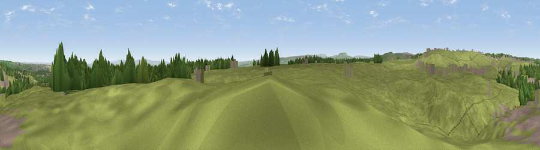

Viewpoint near Catterick Garrison
#25157 in England · top 64% of its area beats it · near Catterick GarrisonThe view, rendered

A 360° render of this exact spot computed from the terrain model, tree cover and land cover — summer colours, afternoon light, calibrated against photographs of famous viewpoints. Real trees, hedges and buildings will differ in detail.
The panorama
Grey silhouette: terrain skyline in each direction (720 bearings, Earth curvature and refraction included). Dashed green: skyline with trees (+15 m) and buildings (+8 m) as obstacles. Blue strip: how far the ground is visible on each bearing.
Where the view opens
Wedge length = distance to the farthest visible ground on that bearing (vegetation-aware). Rings at 10, 25 and 50 km.
What fills the view
85% grassland · 8% woodland · 3% cropland · 3% built-up
Angular shares of the visible panorama (visual magnitude), not map area. Landscape diversity 0.25 (0–1 Shannon).
Key numbers
More beautiful places nearby
The staircase of upgrades: each row has a higher view potential than everything closer. Driving times are estimates from straight-line distance, calibrated against real road routing — check an actual route before setting out.
| Place | Direction | Drive | Score |
|---|---|---|---|
| Viewpoint near Catterick Garrison | S · 1 km | ~2 min | 51.6 |
| Barden Fell | WNW · 1 km | ~4 min | 60.0 |
| Viewpoint near Hudswell | NW · 2 km | ~4 min | 60.6 |
| Viewpoint near Hunton | ESE · 3 km | ~8 min | 69.8 |
| Whit Fell | W · 7 km | ~14 min | 70.7 |
| Viewpoint near Gilling West | N · 9 km | ~18 min | 72.3 |
| Viewpoint near East Witton | S · 11 km | ~20 min | 74.4 |
| Viewpoint near East Witton | S · 11 km | ~21 min | 77.8 |
54.35638, -1.76878 · source: screening · position refined by local search. Computed location — check access rights before visiting.